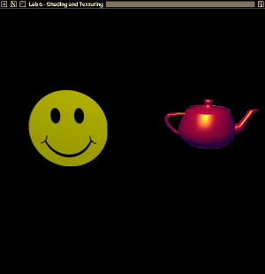

In this assignment, you will work with OpenGL and GLSL to implement lighting, materials, shading, and texture mapping. You will be producing Phong-shaded and texture-mapped shapes using the Phong Illumination Model.
Recall that the Phong illumination model contains three components describing how light reflects off an object:
Ambient Reflection due to "background" light Diffuse Equal reflection of light from a light source in all directions Specular "Mirror-like" reflection of light from a light source
Also recall that basic texture mapping involves using data from a texture image in place of the basic material properties of the object. This "color" is then used in place of the Od (etc.) values in the Phong equations.
As in all the assignments this term, this framework uses OpenGL, GLFW, and GLEW for C/C++ and GLUT for python; if you have completed those assignments successfully on your own system, you have working versions of these libraries and you should be ready to go on this assignment. Because this assignment requires the use of features of GLSL 1.50, you will need at least OpenGL 3.2 to complete it. (This is particularly important when doing normal vector transformations; see the Notes section, below, for more information.)
The framework we are providing for you contains two sets of basic shader files (vertex and fragment shaders) for Phong shading and texture mapping. Your task is to modify the shaders to produce the required shading effect.
The scene you will be rendering consists of a teapot and a quad, illuminated by a single point light and some ambient light. The material and lighting parameters are as follows (colors are specified using RGBA notation; positions are given using homogeneous coordinates):
Material properties of the teapot:
Reflective characteristics of the teapot and the quad:
Properties of the light source:
Ambient light in the scene:
The placement of the objects and the camera are provided for you. The camera uses a frustum projection.
The program accepts keyboard input as follows:
a Start animation r Reset animation rotation s Stop animation q, Q Exit from the program
With no modification, the framework produces images of a quad and a teapot in white. Here are examples of the original image and the images produced by the different types of shaders:

As with previous assignments, a programming environment is supplied for you. This environment uses OpenGL, GLFW, and GLEW (C/C++) and GLUT (python), Code is provided for C, C++, and python (the python modules differ slightly from the C/C++ versions but provide the same functionality). You are free to use any of these implementations. The environment includes the following modules which should not be modified:
Buffers/bufferSet - a support module providing OpenGL vertex and element buffer support.
Canvas/simpleShape - a support module that provides functions for manipulating the shape.
ShaderSetup - a support module that reads, compiles, and links GLSL shader programs.
Shapes/teapot quad - definition of objects, including face normals and vertex normals
textingMain - the main function for the application.
Viewing/viewParams - transformation matrices for the shapes and the camera
You must modify and submit the following components:
phong.vert, phong.frag - "starter" shaders for Phong shading
texture.vert, texture.frag - "starter" shaders for texture mapping
Lighting - a support module that contains code for defining and managing the parameters for the Phong Illumination Model
Textures - support module that contains routines for loading a texture image and for setting up parameters for using the texture
See the Supplied Files section (below) for details on how to download the framework.
You must edit the Lighting module and provide an implementation for the following function:
void setUpPhong( GLuint program );
Send all the appropriate parameters to the shaders to implement Phong Illumination and Phong Shading.
The program argument is the ID of the active shader program. You will need to use this ID to gain access to the shader global variables you must modify. You only need to modify this single function; you should not modify the Lighting.h header file.
Next, you must modify the Textures module to provide implementations for the following functions:
void loadTexture( void );
Used to load whatever texture data your application needs to use. (See below for information about texture image files supplied with the programming framework.)
void setUpTexture( GLuint program );
Used to set up the parameters for texture mapping.
Finally, you must modify the supplied GLSL shader files to achieve the required shading effects.
Important note: You are not allowed to "hard-code" any of the lighting or texture parameters into the shader files; all of these parameters must be sent to the shaders from your setUp*() functions.
The programming framework for this assignment is available as a ZIP archive which is available in the CONTENT->Assignment Material area of mycourses. You can also access this file directly by clicking here.
The ZIP archive contains a folder named lab6; under that are subfolders c, c++,python, and misc (as in previous assignments). In the C and C++ folders you'll find a file named header.mak, for use on the CS systems to help you generate a Makefile that will compile and link your program with the libraries used by the framework. See the contents of header.mak for details on how to do this.
This framework also contains a fifth subfolder named images which contains the following image files, obtained from clipartpanda.com (file names changed for simplicity):
smiley2.png - the image you should use for texture mapping the quad
frowny2.png - an alternate image to be used for texture mapping if you are attempting to earn the bonus points (see the Grading section for details)
Note: You will need to copy or move these images into the directory which contains your source code.
Finally, the framework also contains a sixth subfolder soil_modified (See Notes section below for info).
Your implementations will be tested with a driver program which may be different from the driver found in the framework archive (see above).
The following files must be submitted:
all: phong.frag,phong.vert,texture.frag,texture.vertC: Lighting.candTextures.cC++: Lighting.cppandTextures.cpppython lighting.pyand textures.py
Optionally, you may submit a modified version of the header.mak file, which should be based on the version found in the ZIP archive.
No other files from the distribution should be submitted. (Unlike previous assignments, you cannot modify and submit the header files associated with the Lighting and Textures modules.) All other parts of the framework, including the two image files, will be used in grading but need not be submitted.
If you are using a matrix library other than the ones described in earlier assignments, writeup, you may also submit those files.
The minimum acceptance test is that your code must be complete - that is, it must compile and link cleanly when submitted. Submissions will not be accepted if they fail to compile and link cleanly. (Warning messages from the compiler are acceptable, but not fatal errors.)
Submissions can be made to the dropbox labeled Assignment 6 - Textures and Lighting
This assignment is worth 50 points, distributed as follows:
Creates a window: 5 points
Your code compiles, runs, and produces a stable window without blowing up.
Proper object shading: 20 points for Phong shading
The appearance of the objects is correct, including diffuse and specular effects.
Proper texture mapping: 20 points for texture mapping
The appearance of the objects is correct, including the orientation and positioning of the image on the quad.
Documentation and style: 5 points
Self-explanatory.
You also have the opportunity to earn bonus points on this assignment:
Two-sided texture mapping: 5 points
While applying the "smiley face" image to the front side of the quad, also apply the "frowny face" image as a texture map to the back side of the quad.
If you choose to do this bonus, remember that you'll need to load both texture images; this means your loadTexture() function will need to load two image files into separate texture units. You'll also need to figure out which side of the polygon is being shaded in the fragment shader in order to apply the correct texture image. (Some research on the OpenGL pipeline variable gl_FrontFacing may be useful here.)
The OpenGL, GLSL, shading, and texture mapping lecture notes presented in class should help you to get started on this assignment, as should the files provided with earlier OpenGL assignments.
Remember that Phong shading interpolates the normal vector across the polygon (done for you by the rasterizer in the OpenGL pipeline) and calculates color based on that.
Refer back to the "Hello, OpenGL!" programming assignment for information about obtaining and installing GLFW and/or GLEW libraries.
Remember that in addition to transforming the vertex and light locations into clip (eye) space, the vertex shader must also transform the surface normal into clip space. Many vertex shaders use an OpenGL built-in variable named gl_NormalMatrix to do this; however, because we are using shader-based OpenGL, you cannot use that variable. Here are some web pages which explain how to calculate it:
lighthouse3d.comsongho.ca (note: fixed-pipeline OpenGL)gamedev.netYou may use convenience libraries for loading your texture images. We recommend the use of SOIL, found online at http://www.lonesock.net/soil.html, and already installed on the CS Ubuntu systems All framework files in which SOIL might be used include the necessary header as <SOIL.h> - if you need to include it in other files, use the same path, and (if necessary) tell your compiler where to find the header; the header.mak file is set up to properly compile and link against SOIL on the CS Ubuntu systems.
A small caveat about the SOIL library. The library was written quite some time ago and makes use of features that have since been deprecated in newer versions of OpenGL. That said, as many systems do allow for some backwards compatibility in their OpenGL implementations, this may not be an issue. However, on other systems, (e.g. the Mac), you may run into compatibility problems. I've created a new version of SOIL which fixes some of theses problems and placed the modified source in the subfolder soil_modified.
If you do need to use this modified version, you will need to compile the new source and include it in your project. The c files that will need to be compiled from the new distribution are SOIL.c, stb_image_aug.c, image_helper.c, and image_DXT.c. Once compiled and assembled into a shared source file (.so or DLL), you will need to copy the appropriate .so or DLL file into your working directory along with the pysoil.py that is found in the soil_modified folder. A shell script that produces these files on the Mac (build_soil.sh) can be found in the misc subfolder.
My advice is to download, install, and use the official SOIL distribution (found using this link) first and only resort to using the modified version if you have trouble with the original. For python, the official distribution of PySOIL, a python wrapper over the soil libraries, can be found here. This distribution also includes the outdated soil source.